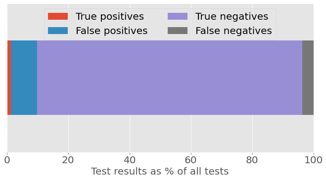
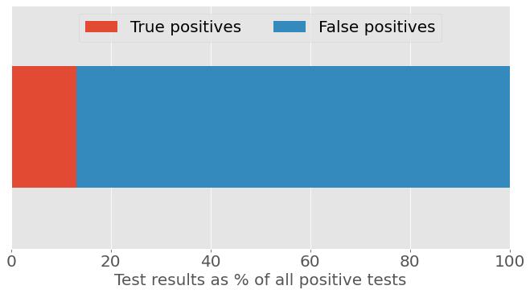
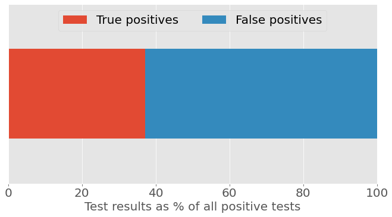
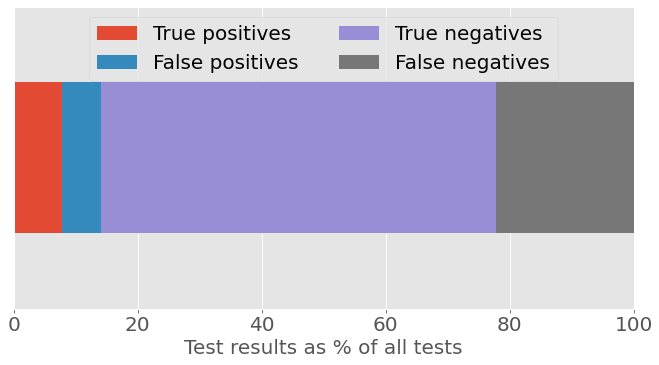

When ChatGPT launched in December 2022, it wasn’t long before users highlighted the tool’s potential as a homework aid. Pop an essay question into ChatGPT’s prompt box or feed your creative writing task to the AI instead, et voila – your work is done!
In reality, of course, things aren’t quite so simple. ChatGPT, like other large language models, has an unfortunate habit of making stuff up – fine for creative writing, perhaps; not so good for a history essay. Outputs need to be checked and verified if you want to guarantee a good mark on your assignments. But while ChatGPT can’t – and shouldn’t – be trusted completely, many have found that it can help lighten the homework load.
With ChatGPT’s user count crossing the 100 million mark last month, it’s understandable that worries about an explosion of AI-written text have proliferated in many professions, including education. Some education systems have decided to ban the use of ChatGPT. Other educators have adopted a more relaxed approach. Writing in Scientific American, law professor John Villasenor argued:
“The time when a person had to be a good writer to produce good writing ended in late 2022, and we need to adapt. Rather than banning students from using labor-saving and time-saving AI writing tools, we should teach students to use them ethically and productively… They need to learn to compose well-organized, coherent essays involving a mix of AI-generated text and traditional writing.”
Villasenor makes a valid point. But experience tells us that not every student is going to use these tools ethically. Some will pursue the path of least resistance and will attempt to present ChatGPT’s outputs as their own. So, the question becomes: Is it possible to tell the difference between human-generated text and AI-generated text?
Spot the difference
One answer to that question comes from OpenAI, makers of ChatGPT. On January 31, they launched a classifier “to distinguish between text written by a human and text written by AIs from a variety of providers”.
OpenAI introduces the classifier by saying that reliably detecting all AI-written text is “impossible”. But it goes on to say:
“… we believe good classifiers can inform mitigations for false claims that AI-generated text was written by a human: for example, running automated misinformation campaigns, using AI tools for academic dishonesty, and positioning an AI chatbot as a human.”
OpenAI stresses that the current version of the classifier “should not be used as a primary decision-making tool”, and users should take that statement to heart – especially if they are planning to vet student homework with it. In evaluations, OpenAI reports that its classifier correctly identifies AI-written text as “likely AI-written” only 26% of the time, while human written text is incorrectly labelled as AI-written 9% of the time.
These two reported numbers are important. They are, respectively, the classifier’s true positive rate and the false positive rate. The former is the conditional probability of a positive result given that a piece of text is AI generated; the latter is the conditional probability of a positive result given that a piece of text is not AI generated. However, neither piece of information directly addresses the question that will be of most interest to teachers: “If a piece of homework is flagged as ‘likely AI-written’ by the OpenAI classifier, what is the probability that it actually is AI-written?”
To answer this question, we need to flip the conditional probabilities – from “the probability of positive test given text is AI generated” to “the probability text is AI generated given positive test”. Bayes’ theorem provides a formula for doing just that, as described in this 2017 article by Tim Brock, published by Significance magazine.
As Brock’s article demonstrates, versions of this problem are familiar to medical statisticians, who often find themselves having to explain screening test outcomes – specifically, the probability that a person has disease X given that they have tested positive for said disease. This probability depends on the prevalence of a disease and the sensitivity and specificity of the test, and Brock defines these terms as follows:
- Prevalence
- The proportion of the population being tested that are affected by a given condition.
- Sensitivity
- The proportion of patients with the condition being screened for that are correctly identified as having the condition.
- Specificity
- The proportion of patients without the condition being screened for that are correctly identified as not having the condition.
Sensitivity and specificity are also referred to as, respectively, the true positive rate (mentioned earlier) and the true negative rate.
We know from OpenAI’s own evaluations that out of 100 pieces of AI-written text, only around 26 would be correctly classified as “likely AI-written”, so the classifier’s sensitivity is 26%. And out of 100 pieces of human-written text, around 9 would be incorrectly classified as AI written, meaning 91 would be correctly classified as not AI written, so specificity is 91%. But the big piece of information we don’t have is prevalence: What proportion of homework assignments are written by AI?
This prevalence figure is likely to vary based on where students live, what age they are, their level of interest in AI tools and technologies, and many other factors. A poll of Stanford University students by The Stanford Daily, for example, found that 17% of respondents used ChatGPT for final assignments or exams in the fall quarter – though it reports that “only about 5% reported having submitted written material directly from ChatGPT with little to no edits”.
So, let’s assume for the moment that 5% of homework assignments are AI-generated. If you were screening 1,000 pieces of homework with the OpenAI classifier, you’d see something close to the following results:
| True positives | False positives | True negatives | False negatives | |
|---|---|---|---|---|
| Results | 13 | 86 | 864 | 37 |
The figures below show the results graphically as proportions of (a) all tests and (b) all positive tests. (All plots are produced using Python and the matplotlib package; code and functions are available from this GitHub repository.)

Figure 1a: Classifier test results as a percentage of all tests, assuming 5% prevalence of AI-written homework.

Figure 1b: Classifier test results as a percentage of all positive tests, assuming 5% prevalence of AI-written homework.
From Figure 1b, we see that if the classifier delivers a “likely AI-written” result, the chance that the text is AI-written is only about 13%. This is the classifier’s positive predictive value at the assumed 5% prevalence.
If we reproduce our figures using a prevalence rate of 17%, also from the Stanford survey, the chance that a positive result is a true positive is now about 37%.
| True positives | False positives | True negatives | False negatives | |
|---|---|---|---|---|
| Results | 44 | 75 | 755 | 126 |

Figure 2a: Classifier test results as a percentage of all tests, assuming 17% prevalence of AI-written homework.

Figure 2b: Classifier test results as a percentage of all positive tests, assuming 17% prevalence of AI-written homework.
Yet another survey, this one from Intelligent.com, claims that 30% of college students have used ChatGPT for written homework. Plugging this number into our calculations, the chance that a positive test result is a true positive is now slightly better than 50/50.
| True positives | False positives | True negatives | False negatives | |
|---|---|---|---|---|
| Results | 78 | 63 | 637 | 222 |

Figure 3a: Classifier test results as a percentage of all tests, assuming 30% prevalence of AI-written homework.

Figure 3b: Classifier test results as a percentage of all positive tests, assuming 30% prevalence of AI-written homework.
Determining ‘guilt’
If a test has a positive predictive value of just over 50% (at an assumed prevalence rate of 30%), does that provide a reasonable basis on which to accuse someone of getting ChatGPT to do their homework? That depends on who you ask. If we look to the legal system for guidance, in civil cases like personal injury claims or contract disputes judges typically make decisions on the so-called “balance of probabilities”. This is generally assumed to mean if we are more than 50% sure of someone’s “guilt” in this context, that might be sufficient to find against them. However, in criminal law, a higher standard applies: “beyond reasonable doubt”. Legal scholars have long wrestled with how to quantify this in probabilistic terms, and surveys of judges put “beyond reasonable doubt” somewhere in the range of being 80% to 99% certain of guilt – see, for example McCauliff (1982) and Solan (1999).
It is at this standard of evidence that OpenAI’s classifier shows its limitations. For example, if we flip Bayes’ theorem around, we find that to achieve a positive predictive value of at least 80%, the prevalence rate needs to be at least 58%. For a positive predictive value of 90%, prevalence needs to be 76%. (Verify these figures for yourself: Python code and functions are available from this GitHub repository).
Thus far in our calculations, we’ve set prevalence according to estimates of the percentage of students who use ChatGPT for their homework. But, according to statistician and science writer Robert Matthews, individual students could justifiably complain about having their guilt decided on this basis. “It’s like deciding someone is guilty of a crime just because they happen to live in an area notorious for criminal gangs,” he says. Instead, the guilt of individual students should be decided using an estimate of the chances that they would use ChatGPT for that particular homework assignment.
Looked at in this way, Matthews says, “You already have to be pretty convinced of a person’s ‘guilt’ even before applying the classifier if you want to put the evidence ‘beyond reasonable doubt’. Bayes’ theorem highlights the need to be really clear about what you mean by the ‘accuracy’ of a test, and about what question you want the test to answer.”
So, here’s a question that teachers will be asking if they are worried about ChatGPT-generated homework: “Has the piece of text I’m marking been written by AI?” If those same teachers use the OpenAI classifier to try to answer that question, they will no doubt expect that something classified as “likely AI-written” is more likely to be AI-written than not. However, as it stands now – and as our examples above have shown – users can’t be confident that’s the case. In education terms, this particular ‘test’ is a long way from scoring top marks.
- Copyright and licence
- © 2023 Royal Statistical Society

 This work is licensed under a Creative Commons Attribution 4.0 (CC BY 4.0) International licence, except where otherwise noted.
This work is licensed under a Creative Commons Attribution 4.0 (CC BY 4.0) International licence, except where otherwise noted.
- How to cite
- Tarran, Brian. 2023. “OpenAI’s text classifier won’t calm fears about AI-written homework.” Real World Data Science, March 15, 2023. URL